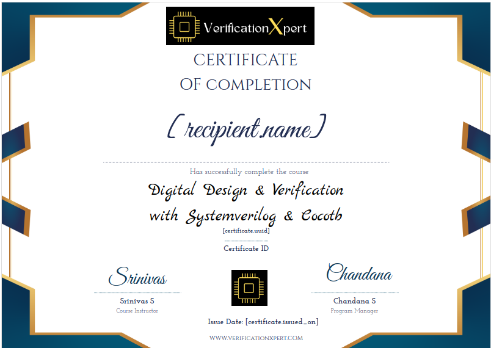

Our Courses
Digital Design and Verification with SystemVerilog and cocotb
This 12-week online course provides comprehensive coverage of digital design principles using SystemVerilog and their verification using cocotb. Participants will gain practical skills and knowledge necessary for successful careers in digital design and verification.
- Duration: 12 Weeks
- Course Type: Online
- Starting Date: To Be Updated Soon
- Registration Deadline: To Be Updated Soon
Course Contents
- Week 1-2: Introduction to Linux and Python Basics (Prerequisites)
- Week 3-4: Digital Design Fundamentals
- Week 5-6: SystemVerilog Essentials
- Week 7-8: Basic cocotb Verification
- Week 9-10: Designing with SystemVerilog and cocotb
- Week 11-12: Course Project and Final Assessment
Course Labs
All labs for this course are conducted via GitClassroom. Students will submit their solutions via Git commits and receive feedback and grading through the platform.
Explore GitClassroom and Git resources:
- GitClassroom - Learn more about GitClassroom.
- Git Documentation - Explore Git resources and documentation.
Upon successful completion of this course, participants will receive a course completion certificate:
Learn More
Course Pricing
Original Price: ₹6999
Offer Price: ₹6999 ₹4999
Contact for More Information and Registration
If you have any questions or need more information about the course, please email us at info@verificationxpert.com.
To register for the course, please send an email to register@verificationxpert.com with your details, and we will assist you with the registration process.
About SystemVerilog
SystemVerilog is a hardware description and verification language used in the design and verification of digital systems. It offers features for both design specification and verification, making it a powerful choice for hardware engineers and verification engineers alike.
SystemVerilog Resources
Explore the following resources to learn more about SystemVerilog:
- ChipVerify - SystemVerilog Tutorial
- Verification Guide - SystemVerilog Tutorial for Beginners
- asic-world.com - SystemVerilog Tutorial
- SystemVerilog.io - Visit SystemVerilog.io for tutorials, articles, and resources related to SystemVerilog.
About Cocotb
Cocotb (Coroutines-based co-simulation testbench) is a popular Python library used for testing and verifying hardware designs written in languages like SystemVerilog and VHDL. It allows for efficient and easy testbench development by leveraging Python's coroutines and provides a powerful toolset for digital design verification.
Cocotb Resources
Explore the following resources to learn more about Cocotb:
- Cocotb GitHub Repository - Access the official Cocotb repository for documentation and source code.
- Cocotb Documentation - Read the official Cocotb documentation for detailed information and tutorials.
- Cocotb ReadTheDocs - Explore the Cocotb documentation on ReadTheDocs for in-depth guides and references.